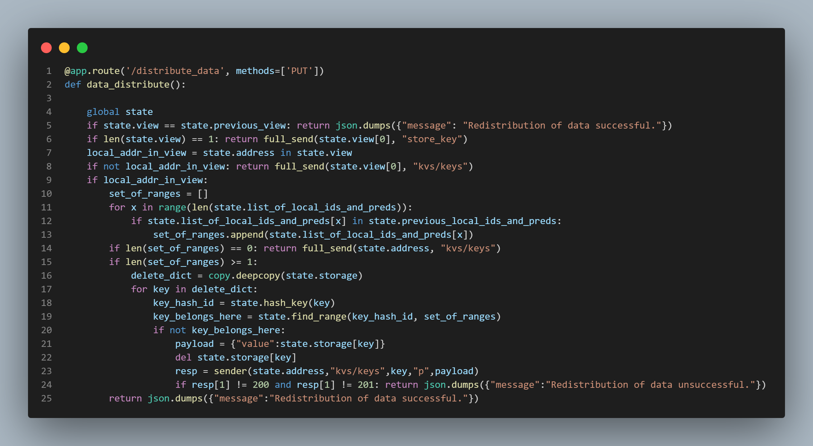

How do we make an application designed to run on multiple computers seem as though it's operating on a single machine? Hash rings, the Chord protocol, multi-threading ... it's all here ...
When it comes to data storage, how can we protect against failure?
Well, we could "distribute" the store across multiple machines ...
"sharding" is one form of distribution, and it would be fair to say that
"replication" is a form of sharding ... we'll talk about all of it before we're done ...
For this iteration of the application, I focused on sharding. Sharding is simply the principle of dividing the data into sections, each of which is hosted by a particular node or computer in the system. This method of protection against failure ensures that, should one node in the system crash, all data in the system is not lost. Instead, only a section or "shard" of the data is lost. I'll talk about replication and my plans for implementing it at the bottom of this page in the synopsis section. For now, let's dig in to everything that is going on with this iteration of the application, because there is a lot to unpack, and a lot to talk about!
The "gen_finger_table()" function...
I am starting with an explanation of this function because in many ways, it represents
the backbone of this project. I'll start by explaining a bit about hash rings and distributed
hashing in general. I think the best way to initially state this is to say that a "hash ring"
is a method of implementing a distributed hash system. A hash ring simply provides
a conceptual mapping of the nodes or computers that compose a distributed system. Each node
hosts an instance of the application, and that application utilizes a hash function. For this particular
application, I used the sha1 hash function. So each node's application uses the sha1 hash function to hash its
own address (which is provided to it via environment variable upon initialization). The result of this hashing is a 40 digit
hexadecimal value. It is this value that is used to determine each node's position in the ring. Nodes are positioned
on the ring according to the value of their hashed address. They are placed in ascending clockwise order
(traditionally) around the ring with the node whose address yields the greatest hash result occupying the
position just before the node whose address yields the lowest hash result (because this is a ring). To the left
I have provided an illustration of this concept. Each position on the "ring" in the second picture from the top
appearing to the left of this text represents a node or computer in the system, and each position is marked with
both its address and the result of hashing that address using the sha1 hash function. The hash results are shortened to
just 5 or 6 hex digits for ease of understanding. Now, this is a "key-value" storage system meaning data
is stored in the system under the reference point of a key. So if a client wants to add data to the system,
that client will provide in its request both the data it wants to store as well as the
key it wants to store the data under. How does this play into our hash ring, you ask? ...
Well, should a user make a request of the system, (whether PUT, GET, or DELETE), the key that the client provides
will be hashed using the same hash function that was used to determine the placement of the nodes on the
aforementioned ring. Then we will simply determine the immediate successor node on the ring of the key's hash result,
and voila, that immediate successor becomes the node or "shard" that stores the client's data under the provided key.
Now, you might ask; "what mechanisms are in place for allowing each node to determine where to send its key-value pair on the
ring"? Well at the time when I was designing this system, I was aware of two ways of accomplishing this...
One was to provide each node in the ring with the address and hash id of every node in the system including its own.
This method of course allows for single-hop routing of request data, because all any node has to do in order
to determine where a request's data should be sent is to hash the key and then search its address-to-hash-id map,
and send the data to the address that is the immediate successor of the key's hash result. This method does not
provide good scalability, however, because what if the system is huge and has millions of nodes? Then each node has
millions of mappings that it has to remember. This problem is compounded by the addition of "virtual nodes" which I will talk about in a subsequent section of this
explanation.
The other method for accomplishing the determination of where to route request data that I was aware of
at the time when I was building this application is by using the Chord protocol,
or at least in the case of this particular application, a kind of partial Chord protocol.
The Chord Protocol (or in this case, partial Chord) ...
As mentioned above, there were two ways that I was aware of at the time of building this application
in terms of how to correctly route requests within the system (across the ring). The first I wrote a bit about above,
and I outlined how it offered single-hop routing, but poor scalability. Well, the Chord protocol offers kind of a happy medium;
i.e., good scalability as well as decent routing times. This is because it offers log2(m) hops in worst case (where "m")
represents the number of positions on the ring)
routing as well as log2(n) (where "n" represents the number of actual active real-life nodes) addresses being stored in the memory of each node.
How could "m" be different from "n", you ask? That question will be answered when I talk about virtual nodes.
Anyway, this routing table that each node maintains with log2(m)
addresses is traditionally called a "finger table" because conceptually, each node is reaching out (like fingers)
across the ring to acquire the members of its finger table. You can see these "fingers" and the
"finger tables" of the nodes illustrated in the crude graph paper sketches to the left of this text. I tried my best to color code
the fingers for clarity. To obtain the number of fingers that each node should maintain, we simply take log2(n). Whatever value this yields represents the number of addresses that each node shall maintain in Its
finger table.
So, for example, if there were 8 active nodes in the system, each node would have a finger table with 3 address mappings in it.
Furthermore, the way that these address mappings would be acquired is by generating a circular representation of the system
(essentially placing each address on a ring according to its sha1 hash result) and iterating through the ring such that every
ith iteration moves the cursor 2i positions away from the node's own position in the ring; then the address
and sha1 hash result mapping present at that position in the ring would become a member of the local node's finger table. I accomplished
this by first creating a mapping of address to the address's sha1 hash result, sorting this mapping in ascending order by the hash result,
and then sticking the whole shebang into a circular linked list. So, for example, if there were, again, 8 active nodes in the system, we
would first calculate log2(8) = 3. Then we would acquire the
address mappings for a particular node's finger table by moving 20 = 1 positions away from the local node's position in the ring,
and store that address's sha1 hash result as well as its actual address in the finger table. We would then do the same
for the node that is 21 = 2 positions away, and for the node that is 22 = 4 positions away. Since we have
done this a total of log2(8) = 3 times, we have completed our finger table, and we are done. You can see
this happening in code form in the topmost picture on this page in the "gen_finger_table()" function on lines 13 - 21.
One caveat I should mention before moving on is that this is not true Chord. With true Chord, nodes would be joining and leaving the
network (system) rapidly and randomly, and the worst case routing scenario would degrade to "n" hops instead of log2(n)
hops. However, in this application, nodes join the network collectively or not at all, and every node gets an entire picture of
the system with which to create its finger table. After creating its finger table, the local node clears most of the mappings and other data
used to create the finger table, and so, while the full ring is generated for a short time on each node upon startup as well as in the event of a view change
(a view change simply being an instance in which one more nodes leave or join the system), that full ring is not maintained. Rather, it is generated,
used to create the finger table, and then discarded. You can see where this is happening in the "data_structure_clear()" function
which is featured in the fourth picture from the top on this page to the left of this text. In true Chord, however, this would not be the case. In true Chord, every node would have to
query its nearest neighbor with a time-to-live value included and decremented appropriately for each request message in order
to generate its finger table. This is why I call this "partial Chord".
You also may be wondering why, when you look at the aforementioned illustrations featured on this
page, you see more than one instance of the same address on the ring. Well, these are virtual nodes which I mentioned earlier, and promised to
talk about, so now it's time to talk about them.
Virtual Nodes ...
Virtual nodes are simply a method of ensuring a reasonably equal distribution of data
across the system. This is accomplished by obtaining the sha1 hash result of the sha1 hash result (and so on until the number of necessary virtual nodes are created)
of a particular node's address, and including it
in the ring. You can see this happening in the "hash_and_store_address()" function which is called by the "gen_finger_table()" function. The "hash_and_store_address()" function
is featured in the fifth picture from the top on this page to the left of this text. Anyway, adding virtual nodes serves to break up the
sequence of nodes so that the sequence of hash results around the ring do not necessarily
increase with the values of the addresses themselves. This means that a node with the address '10.10.0.5' might be succeeded
by a node with the address '10.10.0.2' in the ring. This means that portions of the ring that constitute numerical regions are not
solely served by a single node causing that node to host a disproportionate share of the overall data load in the system. For example,
in the third picture from the top featured on this page, you can see, if you zoom in, the node with the lowest
hash result in the ring is the node with address '10.10.0.7' and the hash result 17f20... . Between it and the node with
address '10.10.0.4' and the hash result 1d362... , is the node with address '10.10.10.5' and the hash result 1b4b... . If the node
with address '10.10.0.5' and hash result 1b4b... wasn't present on the ring, all the data with a key hash result between
17f20 and 1d362 would go to the node with 10.10.0.4. To prevent this and break up the data distribution, we add virtual nodes.
How do we determine the number of virtual nodes that each actual node should have?
The answer is the same way we determine the number of address mappings that each node should have in its finger table.
We simply calculate log2(n) where "n" represents the number of actual active nodes in the system
that exist in the real world (and not just conceptually on the "ring"). However, this now has an effect on our
worst case hop count and the size of our finger table; because now each node must remember the fingers of every one
of its positions on the ring which brings the finger table size up to (log2(n))2, and the worst
case hop count for routing up to log2(n * log2(n)). Still, this is a relatively
small price to pay for the scalability this method of routing (Chord or partial Chord) provides.
Next I will talk about how, specifically, the requests are routed by discussing something I call "the ping - pong"
algorithm.
As always, you can take a look at the full file by clicking on the "view full file" button below.
The "ping - pong" algorithm ...
I call the algorithm featured in the first picture on this page to the right of this
text "the ping - pong algorithm" because essentially, it is responsible for bouncing
the request around the ring like a ping pong ball. That being said, I would like
to begin my explanation of this algorithm by providing an example of a request to this system
in its proper format (at least if we were using the curl command to send the request):
curl --request PUT \
--header "Content-Type: application/json" \
--write-out "%{http_code}\n" \
--data '{"value":"127"}' \
http://localhost:13801/kvs/keys/b
This example displays how a PUT request would be sent to the system if one were to have the application
running on one's own local machine listening at port number 13801. The key in this example would simply be
the character "b". In lines 2 - 4, the function is performing some simple checks to make sure
that the request is formatted correctly and that the expected fields exist in the request, as well as
to apply a check on the maximum number of characters allowed for a key. In lines 6 - 9,
the function is simply connecting to the current instance of the "state" class, hashing the key using the sha1
hash function, initializing a dictionary to be used as the data structure for holding the incoming request value,
extracting the value from the request and storing it in the payload dictionary under the "value" key, and checking to see
if the key "address" is present in the incoming request json. If the "address" key is indeed present in the json request data,
that address is passed on in the payload to the next destination. If the "address" key is not present in the json request data,
then the local node adds its own address to the payload. These actions are taken because my system returns the address in the response
to the client if the node that originally receives the request is not the node that ends up storing the data (for a PUT request, let's say).
However, if the node that originally receives the request is the node that ends up storing the data, then the address is not returned in
the response to the client.
Now we get to the meat and potatoes of the algorithm. Now, the way this works in general is we hash the incoming key using
the sha1 hash algorithm, and we use that hash value by comparing it to the values in our finger table which has been created
using the methods described above in the previous section. The idea is to send the request to the node in our finger table
with the largest sha1 hash result that is NOT
greater than the hash result of the request key. Each node does this until a node discovers that its immediate successor is
in fact also the immediate successor of the request key. Then it sends the key and its data
to be stored at that address (in the case of a PUT request) or to be retrieved from that address (in the case of a GET request).
The question is, with virtual nodes complicating the finger table, (because each node needs to keep track of the "fingers" of
more than one location on the ring), how do we accomplish this? Well, let's start with line 11 in the topmost picture to the right
of this text. This line just catches the most trivial situation. The system consists of only a single node, and that single
node is the local node. If this is the case, just send the key to be stored/retrieved locally. Simple. Line 12 also handles a very trivial case.
If the key's sha1 hash result happens to be the same as one of the hash ids (because remember there is more than one due to the existence of
virtual nodes) that correspond to the local node's address, then again, just store the key and its data locally.
Lines 13 - 17 handle the case in which the key's sha1 hash result is less than that of the node occupying the first
position in the local node's finger table meaning that it is less than the sha1 hash result of the local node's immediate
clockwise neighbor in the ring (because every node knows its immediate clockwise neighbor as discussed above). If this is the case,
there are three sub-cases we need to handle, the first of which is the case in which the key's sha1 hash result is less than
the lowest sha1 hash result representing the local node's address on the ring, (the node maintains a record of this value which we shall
simply call the "lowest hash id") and the key's sha1 hash result is less than the immediate predecessor of the lowest hash id. Essentially, this
is covering the situation in which the key's sha1 hash result arrives at the node that has the greatest sha1 hash result on the ring,
and therefore its immediate successor is the node with the smallest sha1 hash result on the ring. If the key falls in this range,
it should be stored at the node with the smallest sha1 hash result on the ring. For example, if we take a look at the diagram
featured in the picture that is in the above section in the second position from the top we can see that the range we are
currently discussing falls between the position that is marked '10.10.0.7/ff347...' and the position that is marked '10.10.0.4/1d362...'.
We can easily check to see if a key falls in this range, because it is unlike any other range on the ring being that it is the only range in which
the order of the sha1 hash results is reversed - meaning the node that is the clockwise neighbor of the local node actually has a
sha1 hash result that is greater than its own. If this is not the case, then we have two remaining possibilities. The first of which
is if the key's sha1 hash result is less than the lowest hash id. If it is, we simply send the request to the node's predecessor to start this
process all over again. The second is if the key's sha1 hash result is greater than the lowest hash id. If this is the case, then
the key and its data belong at the nearest clockwise neighbor (because we already know that the key's sha1 hash result is less than the nearest
clockwise neighbor or we wouldn't be in this code block to begin with).
Now we shall move on to lines 18 - 21. Lines 18 - 21 are simply handling the case in which the incoming
request key's sha1 hash result is greater than the sha1 hash result of the node occupying the last position in the
local finger table. If the key's sha1 hash result is indeed greater than the sha1 hash result of the node occupying the
last position in the local finger table, then we have two possibilities we need to consider. The first is if
the sha1 hash result of the node occupying the last position in the local finger table is actually the node with the
greatest sha1 hash result in the ring. If this is the case, then we simply store the key and its data at the
node with the lowest sha1 hash result in the ring. The second possibility we need to consider is if this is not the case.
In this event, we simply send the key and its data to the node occupying the last position in the finger table to start
this entire process of checks all over again.
Now we arrive at the somewhat tricky part, i.e., the code featured in lines 22 - 32 of the topmost picture in this section
to the right of this text. This block of code deals with the situation in which none of the checks performed previously succeed in
handling the request. This means we must search for the correct node to which to route the request within the finger table.
Remember, we must keep routing the request to the node with the largest sha1 hash result that is not greater than the sha1 hash result of the
key until we discover that the local node's immediate successor is where the key belongs. We need to also remember that our local
finger table has the fingers from all of the nodes on the ring that represent the local node's address. I should also mention that
when creating the finger table, we mark all of the nodes that are "first fingers" with a "1". A "first finger" is simply a node
that comes directly after a node representing the local node's address on the ring; so our local node maintains a list of every one of its
addresses on the ring along with their sha1 hash results (we shall call this list "the list
of local ids"). We must now search (using binary search) through our list of local ids to see if our key's sha1 hash result falls
between one of our local ids and a "first finger". If it does, we can simply send it to the first finger to be stored (in the event of a PUT request)
or to be retrieved (in the event of a GET request). This whole thing may sound a bit complicated, but it is accomplished with the help
two functions that are modified forms of binary search. One is the "maps_to()" function which is featured in the second pic from the top
in this section to the right of this text. The other is the "immediate_pred()" function which is featured in the
third picture from the top in this section to the right of this text. The "maps_to()" function simply
uses binary search to return a set of bounds (upper and lower) between which the key's sha1 hash result falls within
the finger table. Then we must check to see if the upper bound that is returned by the "maps_to()" function is a "first finger" or not.
If it is indeed a first finger, we then need to see if the key's sha1 hash result falls between one of the local hash ids from the
local hash id list and the upper bound returned by the "maps_to" function. If it does, then we know we can send it to be
stored at (if it's a PUT request) or to be retrieved from (if it's a GET request) the upper bound. If the upper bound returned by
the "maps_to()" function is not a first finger or if the upper bound returned by the "maps_to()" function is a first finger,
but the key's sha1 hash result does not fall between any of the local hash ids and the upper bound, then we simply send the key
and its data to the lower bound to start this process of checks all over again. There is also a check in between to make sure the key hasn't fallen into that infamous range
that exists between the node with the greatest sha1 hash result on the ring and the node with the smallest sha1 hash result on the ring,
but this concludes the explanation of how this algorithm works. This was really, in many ways, the most difficult part of this
project to get right, and it took a bit of doing. I know that it could probably still use some streamlining, but it currently does precisely
what it is supposed to do. I will return to it at a later date.
I will now move on to the next section of this application that was quite tricky to get right - the "view change", i.e.,
the portion of the application that handles nodes leaving and/or joining the system.

The View Change Procedure ...
As mentioned in the previous section, this section will discuss the strategy and code behind the
portion of the application that is responsible for handling nodes leaving and/or joining the system.
There are three main functions that are responsible for carrying this action out. The "view_change()" function
which simply receives the request for view change, and its helper functions; the "view_change_action()" function and
the "distribute_data()" function. The general idea is that the "view_change()" function receives the request for view change,
parses the json data which contains the new view in its complete form, then sends the new view to the union of the set of nodes
in the old view and the set of nodes in the new view (we shall simply call this set "the union set"). Then, the "view_change_action()" function essentially builds the finger
table using the new view, and returns a "200" to the sender. After all the threads that the "view_change()" has initialized are joined
and have returned a "200", the "view_change()" function proceeds to trigger the actual re-distribution of data. It does this by
by sending another threaded request to every node in the union set's "distribute_data" endpoint. It is this
endpoint's function that is responsible for actually redistributing keys to other nodes in the ring if necessary.
Why would it be necessary, you ask? Well maybe now is the time to embark upon a little side-quest and explain how a hash ring
makes things more efficient..
Why a Hash Ring? ...
I must now explain why a hash ring is a more efficient form of distributed hashing than, say, simply implementing a modulus hash system in which each key is modded by the number of active nodes in the system in order to determine where the request gets routed to. If we were simply using a system such as this, every time a view change occurs (meaning every time a node joins or leaves the system), every node would have to re-hash and re-send every key in its store. Why? Let's think about it for a second. If we're using a mod operation to determine where to send requests, that means we're first taking the address of every active node in the system, hashing it using a mod operation (modding by the number of active nodes in the system), storing those mappings (mod of address to address) and maintaining them throughout the life cycle of a view (probably in a list sorted by mod of address). Then when a PUT, GET, or DELETE request is received, we hash the key of the request using the mod operation, and, again, if there are, let's say, 4 active nodes in the system, the mod operation will mod by 4 (key % 4 = ?). This will give us a value between 0 and 4 inclusive, and we will use this value to determine which node the key gets sent to. Simple. But is it efficient? Not in the event of a view change. Let's say a node leaves the system. Now there are 3 nodes in the system instead of 4. This means that during the course of the view change procedure, every node must re-hash the keys in its store by 3 instead of 4, and then re-send the data so that each key and its data are hosted by the node to which they correctly belong in the system. Okay, so how can we escape such a costly and time-consuming process when dealing with a view change? Well, the hash ring is your answer. If all of our nodes exist on a ring, this means that only if a node's predecessor changes does it have to re-hash and potentially re-send each key in its store. Why? Well, again, let's think about it for a second. Let's return to one of the graph paper diagrams I included in the first section of this page. Let's take a look at the first one (the one with 8 nodes on the ring). Let's take the interval from "d7f96/10.10.0.8" to "f76140/10.10.0.4". We should understand at this point that any key that produces a sha1 hash result greater than d7f69 and less than or equal to f76140 gets stored at or retrieved from the node with address 10.10.0.4. Well what if a new node joins the system - let's say it has an address of 10.10.0.9. And let's say one of the hashes that this node produces is a hash of "e6415". This new node now splits the numerical range that previously existed from "d7f96/10.10.0.8" to "f76140/10.10.0.4". This means that only the node with address 10.10.0.4 needs to check every key in its store by re-hashing it as opposed to every node in the new view needing to re-hash every key in its store. Furthermore, the node with address 10.10.0.4 doesn't even necessarily need to send every key in its store. Some of the keys might belong on the node with address 10.10.0.9, but some of them belong right where they are. Hopefully this plainly illustrates the advantages of the hash ring. Now I can conclude by providing a walk-through of how the main three view change functions perform their task (particularly the "data_distribute()" function as it is responsible for checking and re-sending data if necessary).
Walking Through the View Change Functions ...
As mentioned above, the "view_change()" function/endpoint receives the request for view change. I would like to provide an example of a
view change request in its correct form (that is, if the curl request was being used to issue the request).
curl --request PUT \
--header "Content-Type: application/json" \
--write-out "%{http_code}\n" \
--data '{"view":"10.10.0.4:13800,10.10.0.5:13800,10.10.0.6:13800,10.10.0.7:13800"}' \
http://localhost:13801/kvs/view-change
In the above request, the "view" or list of addresses of active nodes in the system is "10.10.0.4:13800,10.10.0.5:13800,10.10.0.6:13800,10.10.0.7:13800".
This means that any node that was previously active in the system that has an address that is NOT listed above will be deprecated, and will have to
relinquish all of its data into the new view. So let's dig in to the actual walk-through, shall we?
First, we'll start with the "view_change()" function which is featured in the first picture from the top in this section to the left of this text.
Lines 3 - 9 are simply connecting to the local node's instance of the state class, extracting the
view list in json data form from the request data, sorting the view and storing it in the "view_list" variable, initializing the "payload"
dictionary with the new view being stored within it under the "view" key, initializing the "state_view_set" set, initializing the "new_view_set" set, and then
finally initializing the "broadcast_set" which is the union of the "state_view_set" and the "new_view_set" sets. As discussed above, we must have this "union set"
because we must send the request to redistribute data to all nodes in the new view as well as in the old view. Some of the nodes in the old view
may be included in the new view, and some of them may not be, but all nodes must make the necessary checks against their data
to ensure that the data is not lost when nodes that are NOT included in the new view leave the system.
Lines 11 - 16 are simply broadcasting the new view to all the nodes in the union set or broadcast set. If any one of those nodes does not return
a "200" response code, the "view_change()" function will return a "View change unsuccessful" message along with a "500" response code. The walk-through now
digresses to the "view_change_action()" function.
The "view_change_action()" function (which can be seen featured in the second picture from the top in this section to the left of this text)
establishes a connection to the local node's instance of the state class, makes a copy of the current view (which is very soon to become the
previous view) and assigns the state class's "previous_view" variable to the copy, assigns the state's "view" variable to the new view,
clears the state class's current finger table (by calling the "data_structure_clear()" function),
generates a new finger table using the new view (but only if the local address is included in the new view), and finally returns a "View received and finger table
generated" message along with a "200" status code. We shall now digress back to the "view_change()" function.
Lines 18 - 23 of the "view_change()" function send a threaded request to the "distribute_data" endpoint which triggers the
"data_distribute()" function. I shall now explain the "data_distribute()" function (which can be seen featured in the third picture from the top
in this section to the left of this text). It starts, of course, by establishing a connection
to the local node's instance of the state class. Lines 5 - 8 are essentially simple checks to catch relatively trivial scenarios.
Line 5 is simply checking to see if the view that has been sent with the view request is actually the same view that currently exists
(is the new view the same as the old view?).
If it is, then we do nothing because nothing needs to be done. All the data is right where it belongs. Simple. Line 6 is checking
to see if the new view only consists of a single node. If it does, simply send all data to be stored at that node. Simple. Line 7
performs a boolean check to see if the local node's address is present in the new view. If it is in fact not included in the new view,
our local node will send all of its data to the first node in the new view's list, and let the "ping pong" algorithm take
care of business (this is done on line 8). If the local address is indeed featured in the new view, then we have some work to do.
Essentially, what we want to do is check every sha1 hash result of every predecessor to a "local hash id", (where a "local hash id" is simply the
sha1 hash result of a position in the ring representing the local node's address), and see if even one of them has changed or not. To do this,
we initialize a list of local hash ids and their predecessors and store this list in a variable in the state class. We call this list
"list_of_local_ids_and_preds". This variable is assigned at line 12 of the "gen_finger_table()" function which is featured in the first picture
of the first section of this page. The action is actually performed by the "gather_ids_and_preds()" function which is featured in the fourth picture
from the top in this section to the left of this text. You can see that the very first line of the "gather_ids_and_preds()" function
actually assigns the state class's "previous_local_ids_and_preds" variable to the current "list_of_local_ids_and_preds". This means
that when the "distribute_data()" function discovers that the local address is indeed included in the new view, it can make the necessary
comparisons between the previous view's local hash ids and their predecessors and the now current view's local hash ids and their predecessors.
Now that's explained, I can return to the walk-through. Line 10 in the "distribute_data()" function initializes an empty list and assigns the "set_of_ranges"
variable to it. Lines 11 - 13 make the comparisons I just alluded to. These lines check to see if a pairing (of local hash id
and predecessor) from the previous view exist in the current view. If a pairing exists in both, it gets appended to the "set_of_ranges"
list. If that "set_of_ranges" list is empty, the local node sends all of its data to its own PUT endpoint to allow the "ping pong" algorithm
to do its work. This is because even though the local node's address is indeed included in the new view, none of the of the
positions on the ring that represent the local node's address have predecessors that are the same, and there may even be new
positions on the ring that represent the local node. Therefore, we must dump all the data into the ping pon algorithm, and let the data
land where it may. You can see this happening on line 14. However, if the "set_of_ranges" list is not empty, this means
that at least one of the local hash ids and its predecessor has been carried over from the previous view. This means that we must check every
key in the local store to see if its sha1 hash result falls within the range of the pairings (of local hash ids and predecessors) that are contained within the
"set_of_ranges" list or not. If a key's sha1 hash result does indeed fall within one of these ranges or pairings, we can simply let it stay where it is.
If it does not fall within one of these ranges or pairings, then the local node sends the key and its data to its own PUT endpoint
to let the "ping pong" algorithm do its work. We must also, of course, delete the key and its data from the local store after sending it.
In the "distribute_data()" function featured in the fourth picture from the top on this page to the left of this text,
you can see this happening.
Line 17 starts the loop, line 18 hashes the key and stores that hash in the "key_hash_id" variable,
line 19 performs a boolean check to see if the key's sha1 hash result falls within one of the previously discussed pairings or ranges,
and if line 10's if statement discovers that it does NOT fall within any of the pairings or ranges, line 21 initializes a dictionary
and stores the key's value within it under the "value" key, line 22 deletes the key and its data from the local store,
line 23 sends the key to the local node's own PUT endpoint so the ping pong algorithm can take care of it, line 24 performs a check to
see if the data has reached its new home safely and returns a "Redistribution of data unsuccessful message" along with a "500"
status code if there's a problem, and line 24 returns a "Redistribution of data successful" message along with a "200" status code
as long as line 23 doesn't catch anything. A helper function called "find_range()" which is part of the state class is used. It, like other
helper functions in this application, is a modified form of binary search and takes two arguments - the "set_of_ranges" list and the
sha1 hash result of the key being examined or checked. You can see this function featured in the bottom most picture on this page
to the left of this text.
Returning now to the "view_change()" function, lines 26 - 31 (in the first picture in this section to the left of this text)
the code simply polls all the nodes in the current view to assess the number of keys they are storing. It gathers these values, appends them to
a list, and returns this list to the sender.
This concludes my explanation of this application, and if you made it this far, what the hell is wrong with you?
*jk
As always, you can check out the full file by clicking on the "view the full file" button below.
Synopsis
This was a great personal project for me to work on. Of course, I built upon the capstone project that
we built in our Distributed Systems class in university which was not only sharded but also replicated,
and because the project we built in university was replicated, the need for causal consistency arose because we
were build to the crash model. Of course we were educated about the different failure or fault models
and the need for gaining consensus, but because this application is not yet replicated, the need for discussion
of those topics has not reared its head. I plan to, in the near future, replicate this application and make
it causally consistent, but I wanted to, for this iteration of the application simply focus on implementing the
partial chord protocol because I saw it as a definite improvement over the non-replicated version of the application
we built in university. The version that we built in university implemented a hash ring to carry out its distributed hashing,
but it forced each node to store the address of every other node in the ring in memory, and this not as scalable as what
has been done here. What has been done here is not as scalable as "full" Chord would be, of course, but "full" Chord would
also have a stabilization algorithm running in the background, and would not allow group joins/departures to/from the system.
I did not want to focus my energies on implementing full Chord for this application - I simply wanted to gain a slight improvement
over the capstone project that I worked on in school, and save my energies for the replication process which I know to
be somewhat difficult. Truth be told, I did not get to contribute anywhere near as much as I would have liked
to my capstone project, and this is because of my own shortcomings as well as being teamed with people who are
extremely capable and simply absorbed the majority of the workload. I owe them a massive debt of gratitude for
teaching me so many Python tricks as well as explaining the concept of virtual nodes in a hash ring to me at a
time when I was being swamped with work from other classes. And as always, an unpayable debt to my friend Damien
who coached me for the Distributed Systems class in general and introduced me to 90% of these concepts.
Anyway, I felt I owed it to myself to go through and write
my own version of this application with an improvement (partial Chord)
just to make sure I truly understood the concepts.
Thanks for taking the time to check this whole thing out, and you can view the full repository
by clicking the "View full repository" button below where you will find a full README file explaining how to
run instances of the application using Docker, and how to run the test files. Happy distributing!